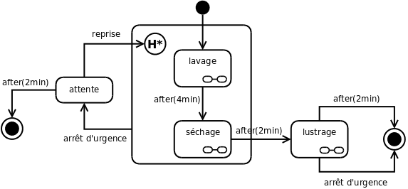

Diagramme états transitions
Il est utilisé en génie logiciel pour représenter des automates déterministes. Il fait partie du modèle UML et s'inspire principalement du formalisme des statecharts et rappelle les grafcets des automates. S'ils ne permettent pas de comprendre globalement le fonctionnement du système, ils sont directement transposables en algorithme.
Exemple
